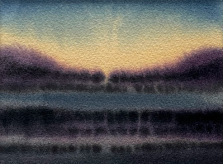

ABOUT ME
Kamil Węgiel, born in 1990 in Silesia (Poland), where I still live. Since childhood, I have been fascinated by art, which has become a strong part of my identity. I express my thoughts and remember my dreams through drawing and painting, particularly watercolor. I consider water a phenomenon of the world, something highly uncritical. Combined with natural pigments and cotton paper, I can depict a piece of myself to share with the viewer and encourage them to a moment of reflection and slowing down in our dynamic, river-like world. Pouring my often dark, oneiric visions onto paper allows me to be a rather cheerful person in everyday life, giving me a sense of release.
